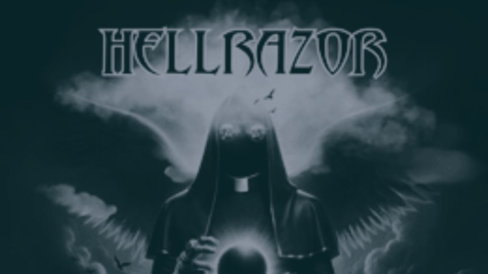

HELLRAZOR: Frostbitten Riffs and Riot-Ready Metal Rising from the North

Raised on riffs in the North, born of the North, HELLRAZOR are a metal/hard rock giant who play as if they're attempting to resurrect the dead and have them headbang. Their sound crashes like a wrecking crew: guitars swinging frantically between chainsaw savagery and earworm hookiness, drums thundering maniacally over blackened skies, bass thudding like bones being rumbled beneath your feet, and vocals that kick their way right into the chest.
This is not gnat noise. This is honed pandemonium with hooks that cling long after the amps have been killed. HELLRAZOR takes an inspiration from the height of metal's hard-core roots, i.e., the raw power and boorish energy of early Priest or Metallica — but carries it forward to the modern era with the fire and attitude of modern rock and metalcore. You have fist-raising anthems designed for smoke-filled clubs, tattooed fists raised aloft, screams intended to be yelled by strangers who become gang members for a moment.
Their sound alternates between storm-bringer fury and unadulterated, over-the-top, cinematically-informed melodrama, in effect, a soundtrack to a motorbike gang arriving at the end of the world with lightning-filled skies and no plans on losing their momentum. There's intensity to the performance, but no slouching; the band is well aware of when to tighten the bolt and when to let the fury unleash.
That campy bite? That's vibe, that's not camp. Consider Ghost's horror-fixture showmanship meeting Avenged Sevenfold's punch-in-the-face brutality of early days. Riffs cut like a knife, choruses blaze like fire. No ballads. No filler. Just intent on steroids.
HELLRAZOR sounds like the live performance, sweat, strobes, boots thudding over monitors, and a front row full of screamin' fans yellin' out every lyric like they're livin' it. An unworried attitude is spreading throughout, the same one that evokes the hell-bent rebellion of classic metal without going so far as to retro.
This band is not faking it dressed up in costume as metal. They are metal,living it, bleeding it, and laying it down with enough power to incinerate a frozen town during a blackout. Plug the sound. Turn it up to eleven. If your heart fails to start pounding by the time the chorus kicks in, take your pulse — you may already be in the graveyard.
But fear not. HELLRAZOR seems to taunt that they are going to give you one last ride.
This dispatch was last updated on October 19, 2025